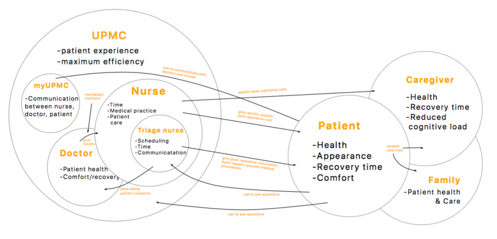
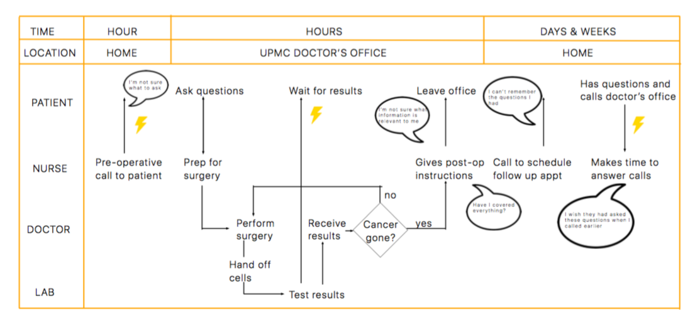
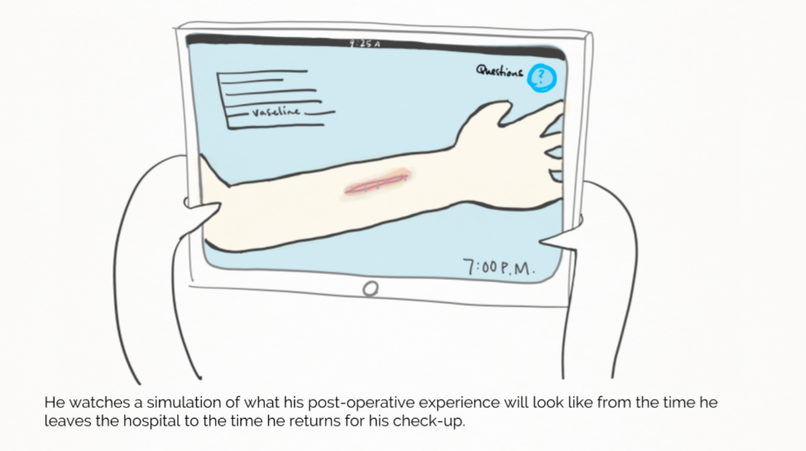
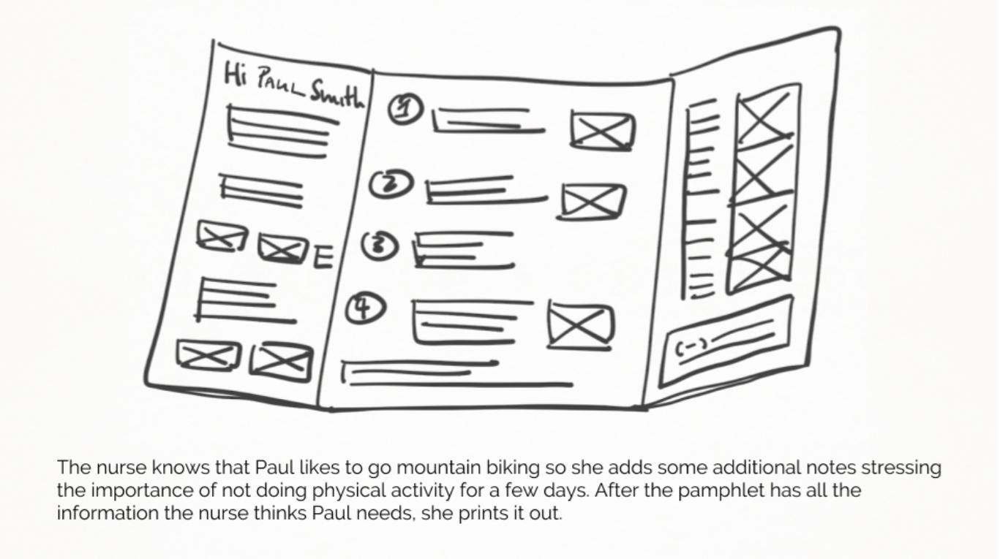
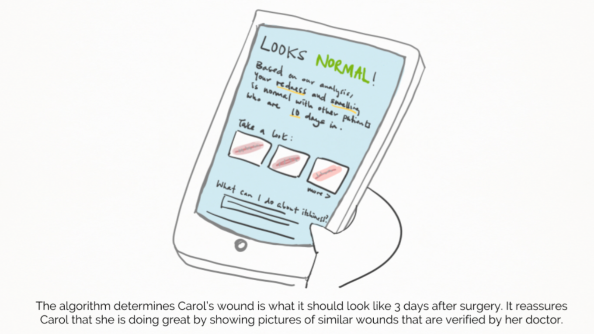
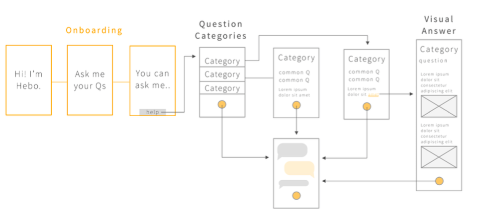
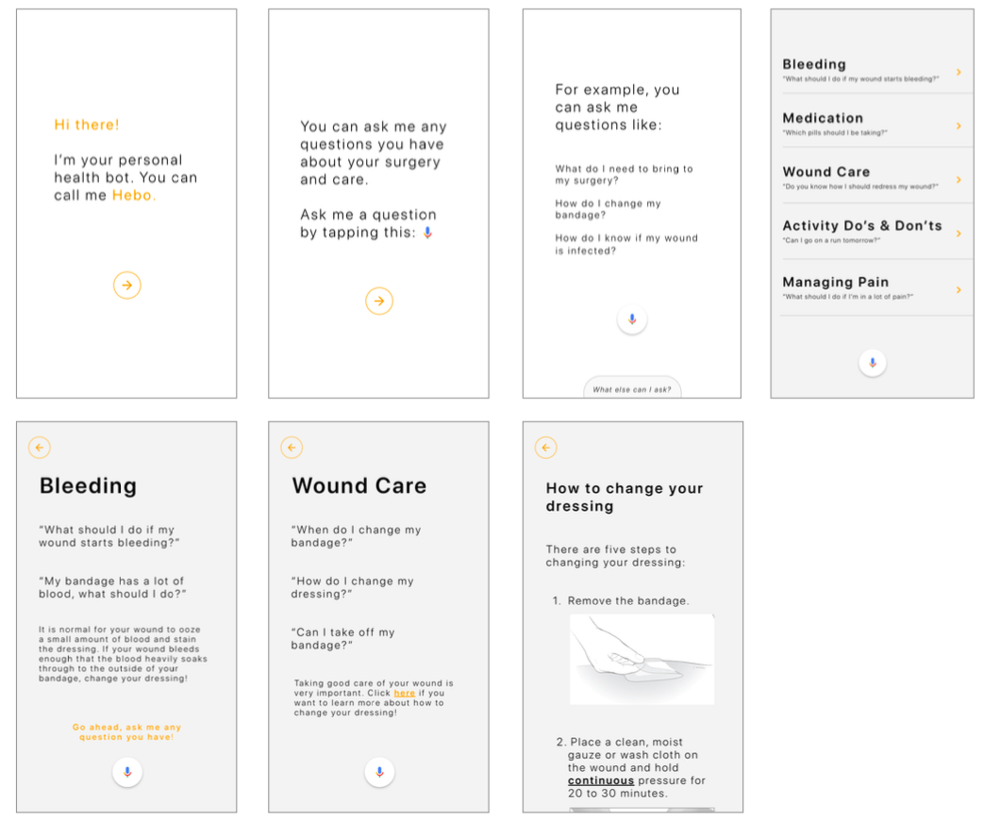

Hebo
A personal post-operative companion and assistant

PROJECT BACKGROUND
Our team worked with UPMC Dermatology Department to improve the post-operative care for skin cancer patients and reduce the amount of phone calls the clinic gets. For these surgeries, patients do not stay overnight in the hospital so they need to understand how to take care of their wounds by themselves. After undergoing surgery, patients often have questions and concerns about their post-operative treatments. Therefore, patients require support from clinical staff over the phone or in the clinic to address common concerns. Moreover, staff members often have to dedicate significant portions of time to communication information already made available to patients.
Our team was tasked with developing a post-operative care assistant that could handle these concerns and act as a constant companion throughout a patient’s recovery. We conducted numerous stages of research and prototyping to finally create Hebo, an app-based chatbot that uses voice, text, and images to convey care information.
RESEARCH APPROACH
Our team started out by understanding the source of the problem we are trying to solve.
- Literature Review: We started with a comprehensive literature review to not only understand the current post-operative care process, but also to gain knowledge on pain management and the relationship elderly people have with current technologies.
- Heuristic Evaluation: We reviewed a prototypical app our client previously developed to guide patients through their post-operative care using Nielsen’s principles.
- Contextual Inquiries: To gain a more thorough understanding of the entire process, our team shadowed patients, nurses, and doctors as they went about their tasks to identify current processes and breakdowns.
- Interviews: After the contextual inquires, we had interviews with the patients, nurses, and doctors. We also wanted to place ourselves in the shoes of the patients, we interviewed them before and after the surgery to understand their thoughts and emotions throughout the process. We also asked them questions about the post-operative instructions that were given to them right after the surgery to access how much information they retained.
- Diary Studies We provided each surgical patient within our study’s timeframe with a notebook to record their post-operative journey, which they were asked to fill out from the evening of their surgery until their one week follow-up appointment. We intended to discern what problems patients commonly face after surgery and what actions they take to address any concerns they have
KEY INSIGHTS
- Doctors think that they are providing patients with all of the information they need, but this is not always the case
- Patients look for greater reassurance and personalized care from the post- operative process
- Nurses feel that some post-operative calls are redundant
- The predominant demographic of skin cancer patients, the elderly population, calls for an emphasis on accessibility and simplicity
- Patients can become self-conscious and concerned about their appearance after undergoing procedures
- Most nurses will postpone a patient’s post-operative call in order to be able to make a more personalized and accurate recommendation for the patient
SYNTHESIZING THE DATA
To make better sense of our research and visualize our data, we constructed a number of models based on the patient and clinician experiences that we observed.
Cultural Model
We first created a cultural model that represents the relationships between various entities related to the surgery and post-surgery care process. A cultural model attempts to capture the relationships between stakeholders of a given system and the central motivations that drive their actions. Importantly, it shows us the conflicting objectives that stakeholders can sometimes have, such as a patient’s high need for comfort during this process and a nurse’s lack of time to provide constant reassurance to all patients.
Sequence Flow Model
Next, we constructed a sequence model that describes the average process a patient experience from scheduling their surgery to their final follow-up. Sequence flow models are used to analyze the steps a stakeholder takes in a given procedure, including identifying touchpoints and breakdowns.
VISIONING PROCESS
To proceed with our ideation process, we began a visioning session to brainstorm possible solutions The main goals we had in mind while conducting the session was to stay out of judgment, have everyone participate to get a range of ideas and viewpoints, and to be relatively specific so that the visions could be a solid springboard into our ultimate solution.
We also created personas of patients and nurses based on the data we collected from our initial research. Personas are used to help steer the ideation process by allowing designers to recognize key aspects of different stakeholders and to help designers keep their core users in mind. We constructed three personas modelled after typical users:
- An elderly couple, where one spouse is undergoing surgery and the other is a caregiver
- An elderly patient, who will be taking care of herself
- A nurse, who works in a dermatologic surgery clinic
STORYBOARDS
We further developed what the experience of the three solutions would be by developing a script and visuals for storyboards. These storyboards helped us envision how a particular solution might fit into a patient’s post-operative care process and ease certain breakdowns.
Educational Simulation Training
Personalized Information Pamphlet
Machine Learning Assessment App
We presented to the client with these three storyboards and bounced ideas around. From this co-creation session, we came up with the idea of using a chatbot as a personal compassion and utilized machine learning to help patients answer questions. We decided to parallel prototype 2 possible solutions to which was the chatbot and the interactive tutorial on post-operative care. From there, we took the best features from each prototype to create Hebo, a chatbot with limited conversation topics designed to answer questions specific to the patient’s surgery experience.
FIRST PROTOTYPE
The chatbot was supposed to be an intelligent FAQ. To test the chatbot, we used the Wizard-of-Oz technique, where we pretended to be the chatbot and asked participants to interact with ‘us’. Before testing on users, we created a set of general questions and answers about bleeding and wound care that we took from the post-operative instruction sheet. After testing our initial prototype, some of the findings we had was that users found it difficult to follow long instructions and will only ask low-risk questions.
ITERATING ON THE PROTOTYPE
For this new iteration of our solution, we wanted our product to be a chatbot with limited conversation topics designed to answer questions specific to the patient’s surgery experience. The questions that patients can ask will be organized into question categories. We also incorporated both voice and text simultaneously to communicate information. We plan to use visuals for answers that require more explanation and visual depth. The chatbot will ask detailed follow up questions to provide a personalized and specific answers. We continue to refine our prototype and test it with users to improve it.

TEST
We performed more focused users testing with our high fidelity prototype. Our target audience included patients from the clinic, in addition to the nurses and other potential users who were above the age of 60. Participants were invited to spend some time interacting with Hebo while performing a think-aloud and then follow-up in a brief interview.
FINAL DESIGN
Our chatbot is designed to be a personal healthcare companion and assistant that answers any questions the patient may have about bleeding and wound care. We found in our research that patients need reassurance to questions that they may already know the answers to. Hebo helps to reassure patients by being available to answer any questions the patient may have at all times and thereby simultaneously reduces the call load of the nurses. In order to accommodate our limited time in the project, we narrowed the scope to questions that concern bleeding, wound care, and swelling on surgery sites on the neck and scalp. Based on conversations with nurses and looking at a few nurse call logs we estimate that although small this scope will address around 25% of the post-operative calls from patients within 48 hours of their surgery.
FUTURE STATE
Our team has worked to create a proof of concept project that provides evidence that a personal health bot, Hebo, will help decrease the amount of patient calls. We believe that in order to successfully carry out the remainder of this project, our client will need to pursue work with future student consultant teams to focus on further refining Hebo, to expand the scope of the Hebo functionalities, and to create a feasible scalability plan that allows the introduction of Hebo to multiple different clinicians serving Mohs surgery patients.